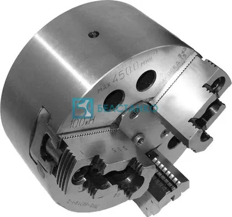

Трёхкулачковые самоцентрирующие для универсальных станков 200 мм.3Трёхкулачковые самоцентрирующие для универсальных станков 250 мм.5Трёхкулачковые самоцентрирующие для универсальных станков 315 мм.2Трёхкулачковые самоцентрирующие для универсальных станков 400 мм.4Трёхкулачковые самоцентрирующие для универсальных станков 500 мм.2
Позиций в разделе: 16